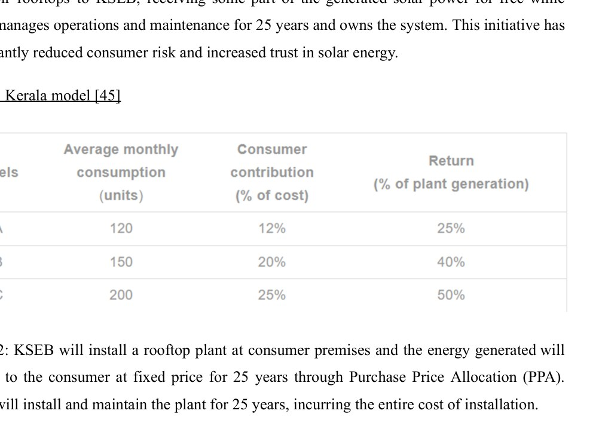
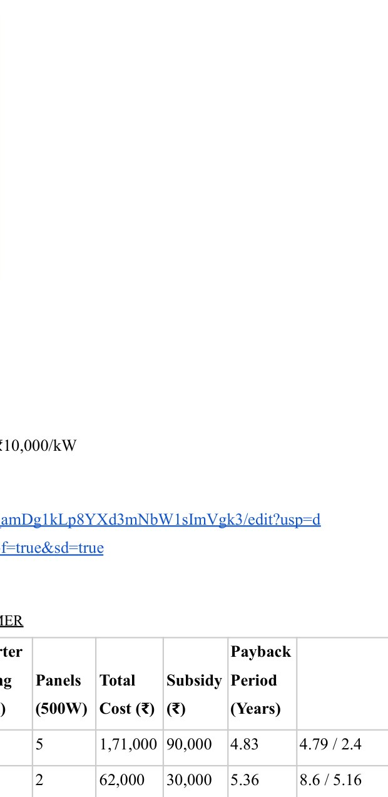

Overview
The study asked why technically viable rooftop PV does not automatically translate into widespread residential adoption. It combines policy review, Kerala and Telangana case studies, stakeholder interviews, consumer surveys and HOMER-based financial modelling.
Stakeholder research
The project interviewed installers, technicians, utility personnel and consumers across urban, semi-urban and rural settings. Recurring barriers included subsidy delays, documentation, service quality and limited rural repair infrastructure.
The report explicitly identifies three rural/semi-urban consumer surveys as conducted by Aditya Vibhute. Interviewed users reported large bill reductions, while also highlighting subsidy delays, maintenance access and installation constraints.
Policy & ownership models
Kerala’s utility-supported ownership models were examined as alternatives to requiring every household to independently finance and maintain a system.

Residential financial model
The grid-connected HOMER case excludes battery storage. For the case associated with Aditya, 245 kWh/month consumption was paired with a 2.5 kW PV system and 3.5 kVA inverter, with a reported modelled payback of about 4.83 years under the study assumptions.

Subsidies, net-metering rules and tariffs shown in this project are historical study inputs as of April 2025, not current regulatory guidance.
Source material
The project narrative above is condensed from the submitted coursework/thesis and keeps design estimates, simulation results and demonstrated hardware distinct.